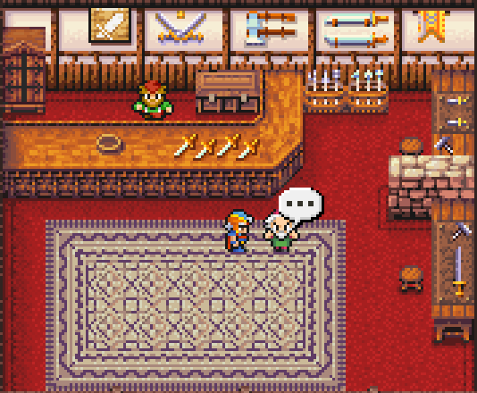
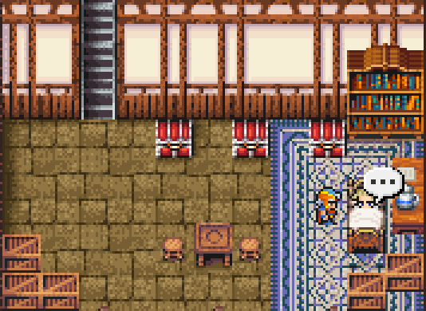
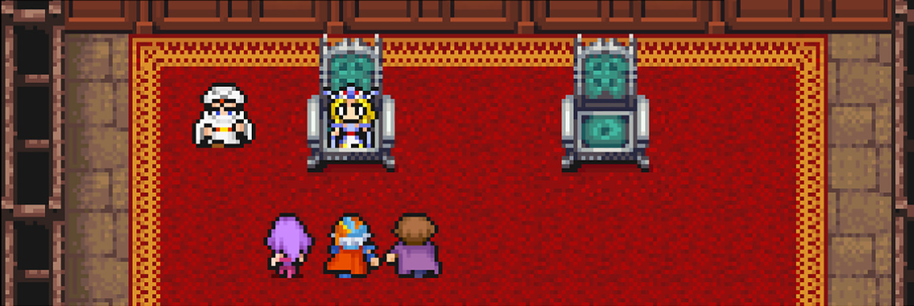

Locked source crop (213,0,534,440); screenshot includes two customers and dialogue.
This review compares actual PR room captures with new composites made from existing room components. Each candidate must match its reference crop dimensions; the boards preserve both sides at native 1× scale. The comparison covers room art composition only, not gameplay or dialogue UI fidelity.
All three exact-size comparison boards are available and verified. Remaining style and crop differences are documented below.

Locked source crop (213,0,534,440); screenshot includes two customers and dialogue.

Source crop (69,0,534,390); it ends above the lower border and clips some crates at the viewport edge.

Source crop (430,355,1380,463); excludes the top and bottom dialogue/menu overlays while retaining the party and attendant.
The locked PR crop and mechanical assembly have identical dimensions; no resize or crop was applied. The reference includes two foreground customers and a dialogue bubble, which the static assembly omits. Click the image to view its native-size PNG.

Assembly proof SHA and exact dimensions are recorded in room-proof-manifest.json.
Reference and candidate use matching native dimensions. The final floor grain is enlarged and reads closer to the source square-stone pitch. Three red/white seat-like forms along the reference wall-floor seam still differ in silhouette/detail; their exact identity is uncertain. The rug is somewhat narrower and the bed proportions differ slightly; these are documented visual deltas.

Reference and candidate use matching native dimensions and exclude both dialogue/menu overlays. Throne, party and attendant positions align reasonably; the candidate carpet border is bolder/larger and the stone sidewalls brighter/yellower than the source. Open the linked native-size PNG for full-resolution review.

Source URLs, archived capture paths, crop rectangles and hashes are in reference-manifest.json. Current visual findings are in review-findings.json. Rebuild crops with make-reference-crops.cjs; build side-by-side PNGs with the room comparison generator. Candidate input paths and dimensions are in README.md.